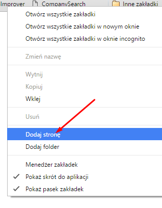
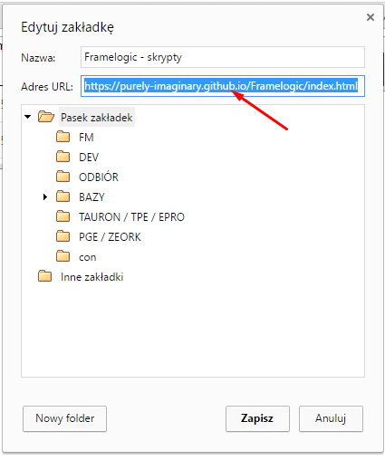

DbImprover
ver.1.4.1 |
Funkcje |
Changelog |
Kod |
|
CompanySearch
ver.1.1 |
Funkcje |
Changelog |
Kod |
|
LooseToolbar
ver.1.1 |
Funkcje |
Changelog |
Kod |
Ale co z tym zrobic?
Klikasz w wybrany skrypt po lewej stronie
Klikasz prawym przyciskiem myszy na puste miejsce na pasku zakladek
i wybierasz nowa zakladke

Nastepnie w polu URL wklejasz CALY kod jaki wyswietla sie po kliknieciu przycisku po lewej

Na odpowiedniej stronie klikasz zakladke i cieszysz sie ulepszeniami :)